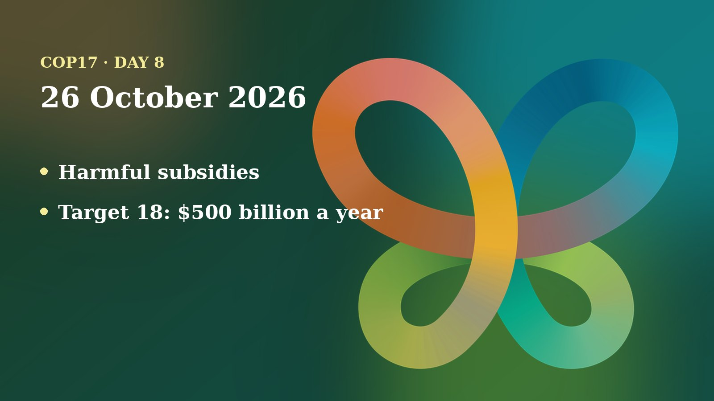

Monday was Finance Day at COP17. New pledges lifted the Global Environment Facility to US$4.4 billion, and the Armenian presidency asked countries to stop paying for activities that harm nature. Ministers arrive tomorrow for the high-level segment.
The day in negotiations
I could not find a published report on what the plenary, working groups or contact groups decided on 26 October. The Earth Negotiations Bulletin issue for the day was not online when I checked, and the UN Transcripts site, which carries automatic and unofficial transcripts, listed Monday's sessions with the text still empty. So this recap does not describe talks that no source confirms.
What the sources do show is the shape of the week. COP17 President Hambardzum Matevosyan, who is also Armenia's Environment Minister, told a press conference that the second week must show political commitment can become concrete action, reports Armenpress. He said important negotiations remain and that the presidency will work with all parties to bridge differences. He proposed the "Yerevan Pathway", which aims to turn the findings of the first global review of progress on the Kunming-Montreal Global Biodiversity Framework into a broader policy response.
Armenpress also reported that the presidency will present four initiatives this week: mountain and freshwater ecosystems, effective area-based conservation, technology for biodiversity monitoring, and reform of harmful incentives. About 70 ministers, 40 deputy ministers and roughly 1,500 participants are expected at the high-level segment, which runs on 27 and 28 October. Last week's talks left several texts bracketed, the marks that show disputed wording, notably on money for the Nagoya Protocol, as I wrote on Sunday.
Positions and stakeholders
Finance Day was the main event. I could read three announcements in full:
- Global Environment Facility (GEF). GEF chief executive Diego Mesa Puyo announced that new pledges of about US$500 million lifted the GEF's four-year funding cycle from US$3.9 billion to US$4.4 billion, says Armenpress. The United Kingdom added £330 million (about US$400 million), Spain €50 million, and Uzbekistan about US$4.6 million in its first contribution. Iceland and Monaco are new contributors. Mesa Puyo called it the second-largest cycle in 30 years. A further US$60 million was announced for the Global Biodiversity Framework Fund.
- Harmful subsidies. The presidency launched the Yerevan Call on Incentives Positive to Biodiversity, the Friends of Target 18 platform and the Yerevan Biodiversity Finance Challenge, according to Armenpress. Executive Secretary Astrid Schomaker said the debate is not about whether to have subsidies but what results they produce. Mesa Puyo said reform can also free up government budgets.
- Kunming Biodiversity Fund. China's Vice-Minister Dong Baotong and UN Environment Programme chief Inger Andersen announced US$21 million for nine new projects, per Armenpress. Andersen said 31 projects have been approved so far; applications for the next round close on 15 November.
These are announcements by the organisers and donors themselves. I have not seen independent checks of the figures, and no developing-country group or regional bloc statement from the day reached me, so I will not describe their positions.

Numbers to know
- US$4.4 billion: the GEF's new funding cycle after Monday's pledges (Mesa Puyo, via Armenpress).
- US$500 million: new pledges added since June, most of it from the United Kingdom.
- US$500 billion a year: the cut in harmful incentives that Target 18 seeks by 2030, as Armenpress summarised the target.
- US$21 million: Kunming Biodiversity Fund money for nine new projects.
- About 70 ministers: expected at the high-level segment starting tomorrow.
Through a child and youth lens
Money and subsidies can feel far from a classroom, but they decide whether the 2030 targets are met, and children and young people will live with the result. I advocate for including children and youth in the CBD process as a member of the UNICEF Global Delegation, so this is the lens I use here.
UN Transcripts listed a Monday press conference titled "From Observation to Action: Youth and Community Engagement in Biodiversity Conservation". Its transcript was empty when I read them, so I am unable to report what was said. UNICEF Armenia's guide for adolescents notes that children have a right to take part in decisions that affect them, and that Armenia will preside over the process until COP18 in 2028.
Nothing I read on Monday mentioned children or youth in the funding announcements. My questions for the week: will new money reach community and youth-led work, and will the ministerial outcomes mention future generations and young people's participation?
On my calendar today
Narek's schedule in the COP17 calendar lists no engagements for 26 October. The Armenia Tree Project booth was scheduled to be open from 09:00 to 20:00. Booth co-hosting does not block the calendar, and Narek is open to speaking requests.
What to watch tomorrow
- The high-level segment opens on 27 October, with ministers expected to speak on the Yerevan Pathway.
- Whether the money still bracketed in the Nagoya Protocol and financial mechanism texts moves.
- More Armenian presidency initiatives, on mountains and freshwater, protected areas and monitoring technology.
- Any statement from youth and children's delegations ahead of the ministers' speeches.
Follow where I am each day on my COP17 schedule, and the daily news in the Newsroom.
Sources
- Additional pledges bring Global Environment Facility funding to US$4.4 billion, announced at COP17 (Armenpress, 26 Oct 2026). https://armenpress.am/en/article/1263880
- Armenia's COP17 presidency initiative seeks to reform subsidies harmful to biodiversity (Armenpress, 26 Oct 2026). https://armenpress.am/en/article/1263826
- COP17's second week must show political commitment can translate into action, says Hambardzum Matevosyan (Armenpress, 26 Oct 2026). https://armenpress.am/en/article/1263861
- Kunming Biodiversity Fund to allocate US$21 million for nine new projects (Armenpress, 26 Oct 2026). https://armenpress.am/en/article/1263845
- UN Transcripts, COP 17 sessions listed for 26 October (United Nations, automatic unofficial transcripts). https://transcripts.un.org/en
- What adolescents and young people should know about COP17 (UNICEF Armenia, 2026). https://www.unicef.org/armenia/en/stories/what-adolescents-and-young-people-should-know-about-cop17